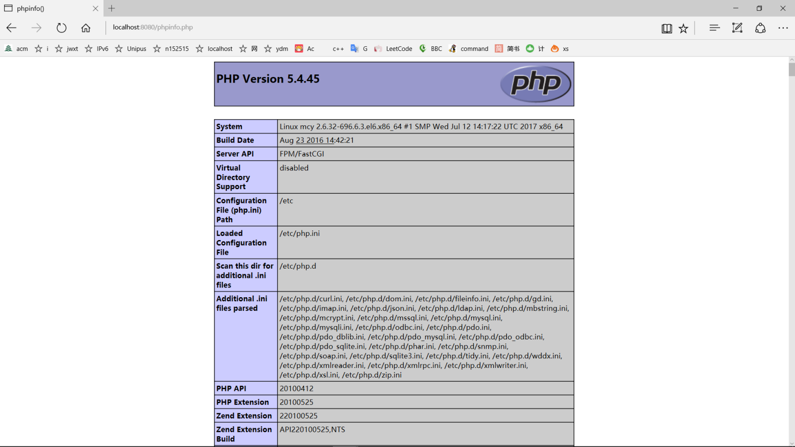

转眼我也快大三了，感觉浪费了许多时间，唉。
给自己的博客换了个主题，换个心情，好好努力，好好学习。
定个任务：除了课业任务和大创的任务，多刷刷题（leetcode，freCodeCampe）。
Fighting！
转眼我也快大三了，感觉浪费了许多时间，唉。
给自己的博客换了个主题，换个心情，好好努力，好好学习。
定个任务：除了课业任务和大创的任务，多刷刷题（leetcode，freCodeCampe）。
Fighting！
这里我使用的是微PE工具箱，大家如果发现其他好用的也可以用。
下载的时候选择“Win10PE”的“64位版本下载”大小207MB，下载完成后打开。

点击“其他安装方式>”后面第一个，长的像U盘的那个。

考虑到兼容性，我们的安装方法选择方案一；待写入U盘选择你的U盘；下一行格式化要勾选上，格式化后面是选择格式化成的文件系统，可以默认，不过要储存单个的大于4GB的文件需要NTFS格式，后面默认USB－HDD就可以了；下面的几个选项，可以按照自己的喜好来选择了。
设置完成之后，点击“安装进U盘”，等待读条结束就可以了。
至此，一个带有PE的U盘就做好了。
Linux+Nginx+Mysql+Php,基本的web服务器搭建,能达到200并发访问
安装CentOS在这里就不过多赘述了，详细地介绍以下Vmware Workstation下对网络环境的配置。
在安装好系统之后，打开“编辑虚拟机设置”。

可以看到这里有两个网络适配器。

默认状况下只有一个网络适配器，选中这个网络适配器，在右边选择“NAT模式”。然后，点击下面的“添加”，添加”网络适配器“，并选择“仅主机模式”。

然后，点击编辑->虚拟机网络编辑器。

在编辑器中，选中你添加的“仅主机模式”的网卡，在这里就是“VMnet1”，然后点击“更改设置”，
将下面的“子网IP”改为“192.168.xxx.0”，这里第三部分可以自定义（只要最终是一个存在的IP就可以），后面的“子网掩码”改为“255.255.255.0”，点确定。

之后，点开本机的“更改适配器设置”，找到对应上面“VMnet1”的虚拟网卡，右击选择属性，更改ipv4的属性，将“IP地址”填为“192.168.xxx.1”（这里的IP地址前三部份要与上面的一致），“子网掩码”改为“255.255.255.0”。保存退出。
完成以上步骤后，打开虚拟机，以root身份登陆。
打开/etc/rc.d/rc.local文件，将下面三行添加到文件中。（eth0默认是网卡1，eth1是网卡2）
|
|
完成之后，在虚拟机里面可以连接外网，本机上可以ping通网卡2的IP地址（你设置的192.168.xxx.xxx）。
|
|
|
|
|
|
|
|
|
|
|
|
|
|
|
|
|
|
|
|
配置nginx支持php
首先，将配置文件改为备份文件
|
|
然后，由于原配置文件要自己去写因此可以使用默认的配置文件作为配置文件
|
|
修改nginx配置文件，添加fastcgi支持
|
|
配置php
编辑文件php.ini，在文件末尾添加cgi.fix_pathinfo = 1
|
|
重启nginx php-fpm
|
|
|
|
测试nginx是否解析php
本地浏览器输入
localhost:8080/phpinfo.php
或者
192.168.xxx.xxx/phpinfo.php
显示php界面 环境搭建成功

这里我们用webbench来模拟多人并发访问。
|
|
|
|
上面是我的测试实例，200并发访问，测试时间30s。

以下是对这些目录的解释：
/bin：
bin是Binary的缩写, 这个目录存放着最经常使用的命令。
/boot：
这里存放的是启动Linux时使用的一些核心文件，包括一些连接文件以及镜像文件。
/dev ：
dev是Device(设备)的缩写, 该目录下存放的是Linux的外部设备，在Linux中访问设备的方式和访问文件的方式是相同的。
/etc：
这个目录用来存放所有的系统管理所需要的配置文件和子目录。
/home：
用户的主目录，在Linux中，每个用户都有一个自己的目录，一般该目录名是以用户的账号命名的。
/lib：
这个目录里存放着系统最基本的动态连接共享库，其作用类似于Windows里的DLL文件。几乎所有的应用程序都需要用到这些共享库。
/lost+found：
这个目录一般情况下是空的，当系统非法关机后，这里就存放了一些文件。
/media：
linux系统会自动识别一些设备，例如U盘、光驱等等，当识别后，linux会把识别的设备挂载到这个目录下。
/mnt：
系统提供该目录是为了让用户临时挂载别的文件系统的，我们可以将光驱挂载在/mnt/上，然后进入该目录就可以查看光驱里的内容了。
/opt：
这是给主机额外安装软件所摆放的目录。比如你安装一个ORACLE数据库则就可以放到这个目录下。默认是空的。
/proc：
这个目录是一个虚拟的目录，它是系统内存的映射，我们可以通过直接访问这个目录来获取系统信息。
这个目录的内容不在硬盘上而是在内存里，我们也可以直接修改里面的某些文件，比如可以通过下面的命令来屏蔽主机的ping命令，使别人无法ping你的机器：
echo 1 > /proc/sys/net/ipv4/icmp_echo_ignore_all
/root：
该目录为系统管理员，也称作超级权限者的用户主目录。
/sbin：
s就是Super User的意思，这里存放的是系统管理员使用的系统管理程序。
/selinux：
这个目录是Redhat/CentOS所特有的目录，Selinux是一个安全机制，类似于windows的防火墙，但是这套机制比较复杂，这个目录就是存放selinux相关的文件的。
/srv：
该目录存放一些服务启动之后需要提取的数据。
/sys：
这是linux2.6内核的一个很大的变化。该目录下安装了2.6内核中新出现的一个文件系统 sysfs 。
sysfs文件系统集成了下面3种文件系统的信息：针对进程信息的proc文件系统、针对设备的devfs文件系统以及针对伪终端的devpts文件系统。
该文件系统是内核设备树的一个直观反映。
当一个内核对象被创建的时候，对应的文件和目录也在内核对象子系统中被创建。
/tmp：
这个目录是用来存放一些临时文件的。
/usr：
这是一个非常重要的目录，用户的很多应用程序和文件都放在这个目录下，类似与windows下的program files目录。
/usr/bin：
系统用户使用的应用程序。
/usr/sbin：
超级用户使用的比较高级的管理程序和系统守护程序。
/usr/src：
内核源代码默认的放置目录。
/var：
这个目录中存放着在不断扩充着的东西，我们习惯将那些经常被修改的目录放在这个目录下。包括各种日志文件。
在linux系统中，有几个目录是比较重要的，平时需要注意不要误删除或者随意更改内部文件。
/etc： 上边也提到了，这个是系统中的配置文件，如果你更改了该目录下的某个文件可能会导致系统不能启动。/bin, /sbin, /usr/bin, /usr/sbin: 这是系统预设的执行文件的放置目录，比如 ls 就是在/bin/ls 目录下的。
值得提出的是，/bin, /usr/bin 是给系统用户使用的指令（除root外的通用户），而/sbin, /usr/sbin 则是给root使用的指令。
/var： 这是一个非常重要的目录，系统上跑了很多程序，那么每个程序都会有相应的日志产生，而这些日志就被记录到这个目录下，具体在/var/log 目录下，另外mail的预设放置也是在这里。
yum（全称为 Yellow dog Updater, Modified）是一个在Fedora和RedHat以及SUSE中的Shell前端软件包管理器。基於RPM包管理，能够从指定的服务器自动下载RPM包并且安装，可以自动处理依赖性关系，并且一次安装所有依赖的软体包，无须繁琐地一次次下载、安装。yum提供了查找、安装、删除某一个、一组甚至全部软件包的命令，而且命令简洁而又好记。
yum的命令形式一般是如下：yum [options][command][package …]
其中的[options]是可选的，选项包括-h（帮助），-y（当安装过程提示选择全部为”yes”），-q（不显示安装的过程）等等。[command]为所要进行的操作，[package …]是操作的对象。
|
|
|
|
自动搜索最快镜像插件： yum install yum-fastestmirror
安装yum图形窗口插件： yum install yumex
查看可能批量安装的列表： yum grouplist
|
|
|
|
|
|
|
|
|
|